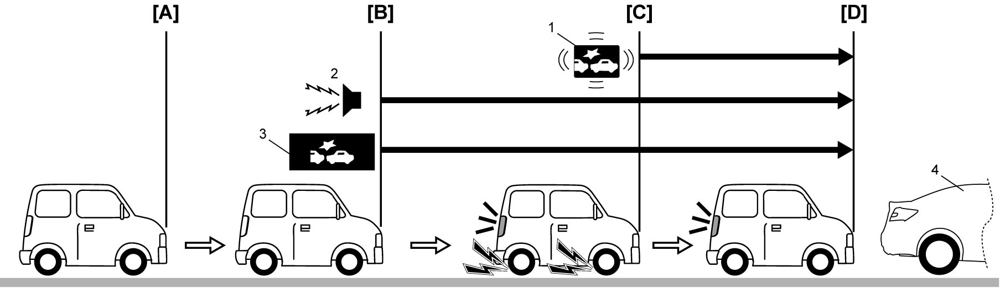

10J
| RBS System Description |
•RBS is a system equipped with a frontal collision warning device, brake assist device against frontal collision damage and automatic brake device. The system functions to reduce the frontal collision damage and avoid the collision itself in the limited condition.
•As a sensor to detect a vehicle ahead, the system uses a millimeter wave (radio wave) radar device incorporated in RBS control module.
•RBS system consists of RBS control module, RBS OFF switch, FAR/NEAR setting switch, ESP® OFF switch, steering angle sensor, combination meter, ECM, TCM (A/T model / twin clutch system model), BCM, ENG A-STOP control module and ESP® control module.
•As a sensor to detect a vehicle ahead, the system uses a millimeter wave (radio wave) radar device incorporated in RBS control module.
•RBS system consists of RBS control module, RBS OFF switch, FAR/NEAR setting switch, ESP® OFF switch, steering angle sensor, combination meter, ECM, TCM (A/T model / twin clutch system model), BCM, ENG A-STOP control module and ESP® control module.
Operation Description
When your vehicle is approaching a vehicle ahead rapidly, the system detects a potential for collision and urges the driver’s attention to apply brake by sounding the buzzer in the combination meter and displaying caution on the information display. And, when the system judges that a collision is inevitable, the automatic brake is activated to avoid the collision or reduce the collision damage even if it occurs.
1)The millimeter wave radar detects a vehicle ahead (4) at point [A].
2)The distance between your vehicle and a vehicle ahead is getting close gradually.
3)When your vehicle approaches the point [B], the system detects hazardous state of a collision and urges the driver’s attention to apply brake by sounding the buzzer (2) in the combination meter and displaying caution on the information display (3). (Frontal collision warning function)
4)When your vehicle approaches the point [C], the system judges that a collision is inevitable and then applies automatic hard brake blinking RBS indicator light (1) and displaying caution on the information display at the same time and thus avoids the collision or reduces the collision damage even if it occurs. (Automatic brake function)
Further, when your vehicle passes the point [B] and the driver notices that the vehicle is approaching the vehicle ahead and applies hard brake but insufficiently, the system judges a pressing hazard of the collision and assists avoidance of the collision by raising brake pressure. (Brake assist function)

Further, when your vehicle passes the point [B] and the driver notices that the vehicle is approaching the vehicle ahead and applies hard brake but insufficiently, the system judges a pressing hazard of the collision and assists avoidance of the collision by raising brake pressure. (Brake assist function)

 "Expand image")
| [D]: | Vehicle stops |